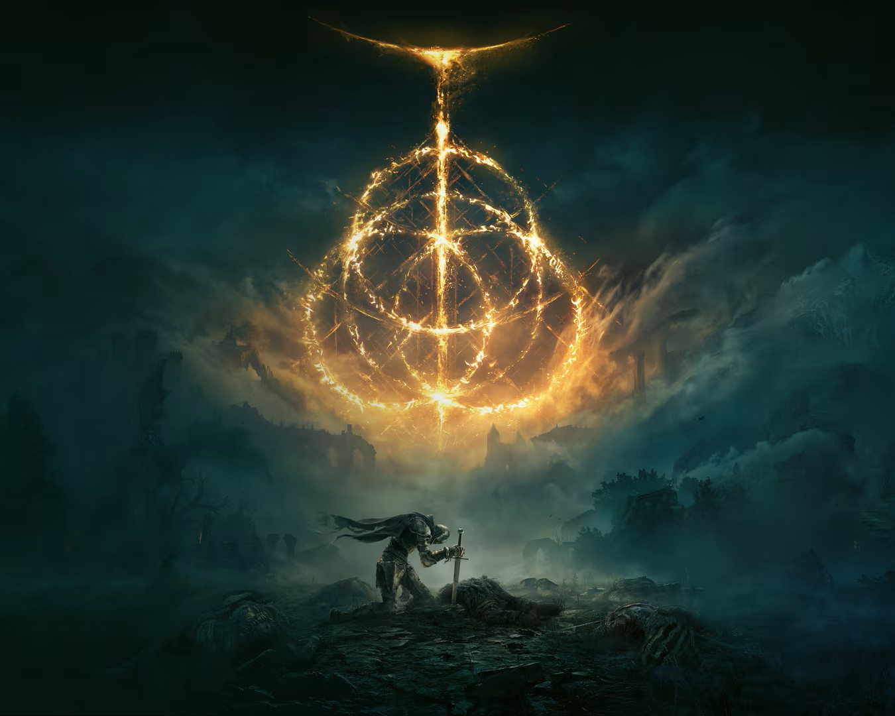

- The Golden Order Family
- The Golden Order and The Shattering
- The Tarnished
- The Endings of Elden Ring
| Marika & Godfrey | Rennala & Radagon | Marika & Radagon |
|---|---|---|
| Godwyn | Rykard | Miquella |
| Morgott | Radahn | Malenia |
| Mohg | Ranni | Melina |
Queen Marika is the ruler of the Lands Between and one of the most prominent figures in the story. She Created the Erdtree which is a massive tree in the Center of the Lands Between and the Golden Order. The Golden Order is the main system of order in the world, and Marika uses the Erdtree to govern over the people. Marika married Godfrey and he became the first Elden Lord. Godfrey was known for his strength and his lion companion Serosh. While in a battle between the Giants in the Mountains north of Leyndell, Godfrey lost his grace and then he and his group were exiled from the Lands Between. Rennala was known as the Queen of the Full Moon and created both the Carian and Glintstone Sorcery. Rennala created Raya Lucaria as a place for people to study and create their own sorceries. To keep peace between Raya Lucaria and Leyndell, Rennala married a royal knight named Radagon. During the Shattering, Marika was looking for a second Elden Lord and asked for Radagon to be the next Elden Lord.
Godwyn was the first child Marika had, he was known as a strong but kind knight of Leyndell. He was the founder of the Dragon Cult and taught others about the lightning incantations. Morgott and Mohg were twins cursed at birth because of their omen birth. Omens are known as a cursed subrace of Commoners or Humans. They are known for the various curved horns throughout their body. Even though they were both shunned by being omens, Morgott was still loyal to his mother and the Golden Order. Mohg communed with Formless Mother to create Blood incantations. He also planned to kidnap Miquella to use him to become Elden Lord.
Both before and during the Shattering, Praetor Rykard rebelled against the Golden Order and found his following in Mt. Gelmir. He created his stronghold there, Volcano Manor, and used this area to incite a war against Leyndell. Also, while there he used the magma from the volcano to create magma sorceries. While Rykard was at Mt. Gelmir, he found the God-Devouring Serpent who feeds to become stronger. To gain power and to try and achieve godhood, he let the serpent feed on him. Radahn was a master on the battlefield and studied how to use Gravity sorceries to become unmatched. He always looked up to Godfrey and Radagon because of their title of Elden Lord. Princess Ranni studied under her mother to learn about Glinstone and Full Moon sorceries, and she learned through this combination how to create Cold sorceries. She also planned with Rykard to steal a piece of the rune of death to kill their half-brother Godwyn.
Miquella and Malenia were both cursed from birth. Miquella was cursed with eternal youth, while his sister was cursed with Scarlet Rot. Scarlet Rot was infected onto the Lands Between from the Outer God of Rot. This god chose Malenia as its vessel to corrupt the world with Scarlet Rot. Miquella was determined to figure out a cure for his sister's curse. While trying to work on a cure, Miquella created the Haligtree, which was a second Erdtree in which that it was supposed to take over and become the new Erdtree, but Mohg had other plans for Miquella instead. Unfortunately, he was never able to find a permanent cure, but he was able to find two temporary ones, gold and fire, they were both ways to slow down the sickness. Miquella didn't want to burn his sister, so he created gold prosthetics and armor for her. Melina is the player character's companion that helps during the game like leveling the player up. When she was born, she had a vision of the Erdtree being burned and that she would use herself as kindling. Her time of birth is unknown, but throughout the game it's heavily implied she is siblings of Miquella and Malenia.
The Greater Will the main god that helps Marika to rule over the Lands Between with the Golden Order and the Elden Ring. To help keep order in the Lands Between, the Greater Will sent down the Elden Beast which is a physical embodiment of the Greater Will to keep its influence stable. This all changed when, Godwyn the Golden was slain and killed by the Black Knives. He was killed with a piece of the rune of death. When Godwyn died this became to be known as the Night of the Black Knives. Distraught from her child being killed Marika shattered the Elden Ring. After the Elden Ring was shattered, each of Marika's other children got a piece of it. This led to a war called The Shattering which each demigod fought each other to try and gain the whole Elden Ring to become the next Elden Lord. The main critical events that came from the Shattering was that Malenia fought General Radahn in Caelid, and then being gravely wounded from the fight, Malenia's Scarlet Rot curse exploded corrupting both Radahn and Caelid with the Scarlet Rot. While Radahn and Malenia fighting, Mohg kidnapped Miquella from the Haligtree, and Mohg would use Miquella to become the next Elden Lord. Morgott stayed behind in Leyndell to protect the throne from anyone who wasn't worthy. Praetor Rykard started a rebellion against the Golden Order along with Marika. With this traitorous rebellion he was deemed a traitor and given the epithet "The Lord of Blasphemy". Lunar Princess Ranni began her plan to enact the Act of Stars.
The Tarnished are a group of people that were cast out of the Lands Between once their service were not needed anyone. Once the Elden Ring was shattered, the tarnished were allowed to come back from the Badlands in the chance one of these Tarnished could become the next Elden Lord. The player character is one of these Tarnished characters, and your goal of the game is to become the next Elden Lord. You travel with Melina and your steed Torrent, to collect the shattered pieces of the Elden Ring from the Demigods to restore the Elden Ring.
The three main endings of Elden Ring:
The Age of fracture is the basic simple ending of Elden Ring where the tarnished restores the Elden Ring, but nothing changes in the Golden Order. The world just continues, but nothing really changes. The Age of Stars is an ending where you help out Ranni to create a new order, the Dark Moon Age, disconnecting the world from the Greater Will. The Lord of the Frenzy Flame ending is where the player character becomes the vessel for chaos and destroys the world with the Frenzy Flame. This ending comes from the player being able to save Melina from sacrificing herself to burn the Erdtree, however the Frenzy Flame makes the player go mad and you can't control it in the end.